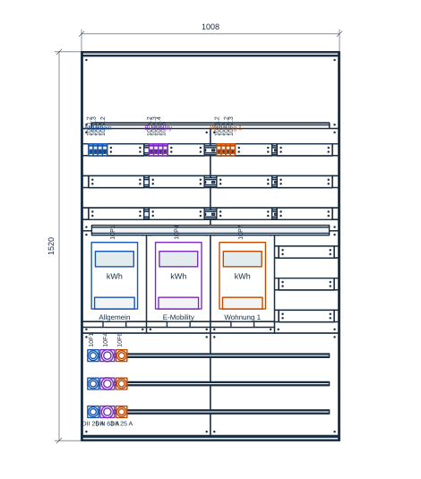
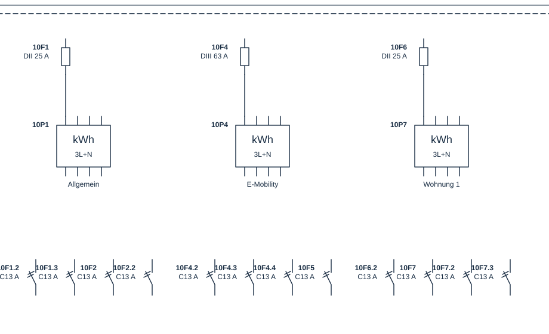

FÜR DEN SCHALTANLAGENBAU
Von der Idee.
Bis in die Werkstatt.
Schema, Dispo, Offerten und Werkstattwissen.
Ein Arbeitsplatz für alles, was deine Schaltanlage weiterbringt.
Im Browser. Im Betrieb. Im gleichen Projekt.

WENIGER ERKLÄREN. MEHR ZEIGEN.
So wird aus einer Idee
ein nächster Schritt.
Schau dir zwei typische Abläufe an.
Kurze, animierte Demos mit Beispieldaten – Schritt für Schritt steuerbar.

1. Geräte und Stromkreise im Schema erfassenPlatz für deine Anlage.
- Verteilungsart
- Selbstbaurahmen
- Breite × Höhe
- 1008 × 1520 mm
- Reserve
- 20 %
Geräte und Abmessungen prüfen, dann den Aufbau erzeugen.
PROJEKT ERFASSEN
Unterverteilung Werkstatt
- Offerte
- BEISPIEL-001
- Kunde
- Musterbetrieb
- Anlage
- Unterverteilung
POSITIONEN ZUSAMMENSTELLEN
Material und Arbeit. Im Blick.
| Position | Menge | CHF |
|---|---|---|
| Schrank | 1 | 680.00 |
| Leitungsschutzschalter | 12 | 264.00 |
| Montage · CHF 95 / h | 6 h | 570.00 |
IM BETRIEB GESPEICHERT
Bereit für den nächsten Schritt.
Berechtigte Mitarbeitende können die Offerte öffnen und weiterbearbeiten.
SCHEMA & DISPO
Vom Stromkreis
zum Aufbau.
Geräte im Schema erfassen, den Rahmen konfigurieren und die Disposition als Grundlage für die weitere Planung erzeugen.
Illustrative Abläufe. Die Zeichnungen stammen aus dem Dispo-Werkzeug; Beispieldaten sind keine technische Auslegung oder Preisempfehlung.
VOM BÜRO AN DEN WERKTISCH
Das Wissen, das du
gerade brauchst.
Abstände nachschlagen, Schienen berechnen oder die passenden EW-Vorschriften öffnen. Deine täglichen Helfer bleiben zusammen – auch auf dem Tablet.
Werkzeuge öffnenSchienen & Aufbau
Schienenrechner und Aufbauabstände für die Werkstatt.
Vorschriften & Tabellen
EW-Unterlagen, Leiterfarben und technische Referenzen.
Wärme & Dokumentation
Verlustleistungen erfassen und Berechnungen dokumentieren.
DEINE FIRMA. DEINE ABLÄUFE.
Zusammen arbeiten.
Klar organisiert.
Projekte werden im Betrieb gespeichert. Zugriffe lassen sich nach Aufgabe vergeben, Werkstattvorlagen an eure Arbeitsweise anpassen.
- Persönliche Benutzerkonten und Berechtigungen
- Gemeinsame Offerten und Planungsprojekte
- Firmenvorlagen auf Basis eines gemeinsamen Standards
DEIN NÄCHSTES PROJEKT WARTET
Alles bereit.
Jetzt bist du dran.
Bei SchaltBase anmelden Der Arbeitsplatz ist nur mit einem freigeschalteten Benutzerkonto zugänglich.